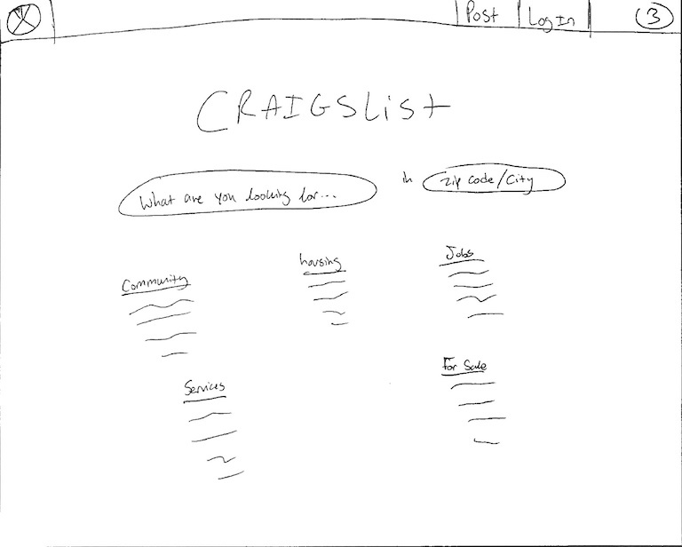
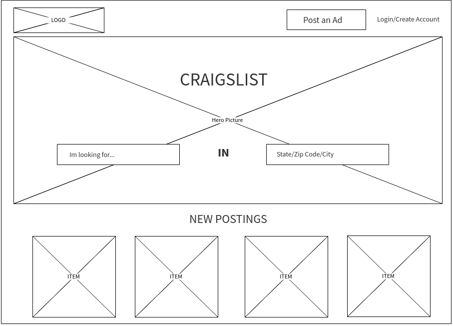
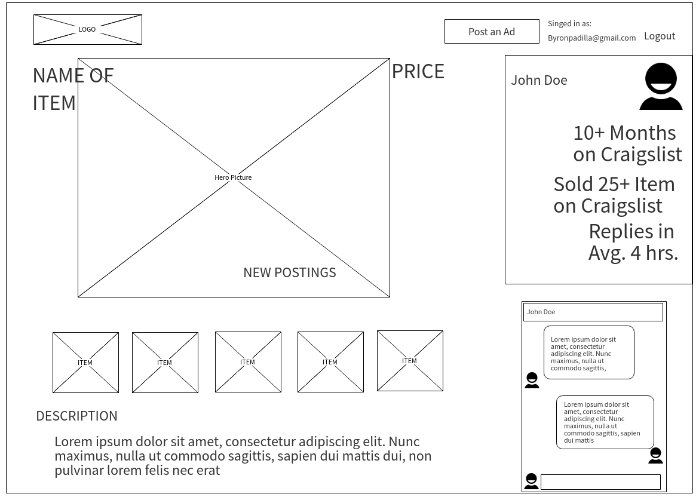

Craigslist, is a an online application/service that allows users to purchase and sell items. Initially, we chose to redesign this site because we found that consumers harbored resentment towards the platform—particularly towards its design. The goals of our overall project was to analyze the entire edifice of the site and discover what the core issues were and provide solutions that would mitigate those frailties and ultimately improve the user experience.
Problems
The methods we employed to garner what the main contentions were surrounding the website included both interviews and surveys. For interviews we spoke and engaged with active consumers of the site. These participants were selected from a diverse array of individuals. The latter method we employed to analyze Craigslist users, was through surveys. These brief yet effective tools provided incredible feedback and enabled us to gauge effectively whether or not users appreciated the interface, were confident with the steps required to fulfill a task, the communication features present on the site, and if they felt secure when on the platform.
Overall, what we uncovered was that people were not satisfied. The lack of communication channels offered by the site along with the fear of safety and security are a few reasons why. The hybrid of an old fashioned newspaper and modern visual display prevented many users from coming back, instead, many would opt for competitors such as OfferUp or Angie's List. We wanted to delve further what the underpinnings behind these aggressive feelings were. We conducted multiple usability tests that encouraged participants to complete the following tasks
creating an account, listing an advertisement, finding a specific product, using the calendar feature, and changing locations.
Running these tests gave us immense insight into the users frame of mind. We discovered many usability issues through this process, many of which were unbenounced to us at the onset of this endeavor.
We designated the most pressing issues raised by our participants into four main categories; all save one fell under Jakob Nielsen's’ Usability Heuristics.
Consistency and Standards:
Nielsen defines this heuristic as the following: users should not have to wonder whether different words, situations, or actions mean the same thing. In other words, users should not fret over ambiguous or equivocal naming conventions. As we will see, Craigslist is riddled with unorthodox naming conventions that made it burdensome for users to make accounts, list products, and navigate through the site.
Usability Testing
We asked users to create an account. To our surprise, we found, how difficult it was for participants to complete such a simple task. Typically, modern sites have distinct buttons that reads, “Sign-up” or
“Login”; however, with Craigslist, we found no such common words or phrases. Instead what we were met with was, “my account” as the default button users were required to select when wishing to create an account.
This confused many of our participants. Many spent precious seconds (some
minutes) glancing across the screen to find the button. When asked, "why after seeing the my account button did
they not click it." The response from one particular user, was that the button said "my account, I was
looking for create an account or sign up here or whatever.” Because Craigslist had placed the word
my in the beginning, it deterred people from clicking that button, causing a conflict in the minds of users. In other words, some users asked themselves
(when questioned further), Why would I click “my account”, I don’t have a Craigslist
account yet, I need to make one”. This was the crux of the issue. Craigslist naming
conventions were not consistent with some of the commonly used phrases and
terms used around the wider web.
Our Recommendation
Majority of the concerns participants spoke up about were not not merely referring
to the aesthetic, but also to the language used throughout the site. This was a
consistent issue throughout Craigslist, the main recommendation we have moving
forward is to update the language. For instance replacing "my account" with "login" and underneath
another option titled "sign up". "Post to classifieds" could be replaced with "Post". These
slight, but crucial changes will help with navigation, facilitation, and ultimately
make the platform seamless for both novice and expert users.
Information Overload:
Another of Jakob Nielsen's 10 General principles that we found was not taken into
consideration by the creators of Craigslist was Aesthetic and Minimalist
Design. Nielsen defines this as dialogues should not contain
information which is irrelevant or rarely needed. The reason why minimalist design is
needed in a user interface is that every piece of information fights for the attention and
consideration of the user. If too many pieces of information are placed in front of the user
they will experience what is called Information Overload. We found that Users felt that they were exposed to a number of different options and diverging paths when attempting to navigate, making it difficult to pinpoint exactly what one was supposed do or where one was supposed to go.
Usability Testing
A clear example of the effects of information overload could be seen directly from
the usability testing performed with our participants. During one of the assigned tasks, we asked a user to find an apartment in Ottawa, Canada. The participant for the first 5-7 minutes was unable to change the location from Orange County to Ottawa.
Craigslist. This is something that can be done by simply clicking two times on a
column located on the right side of the homepage. The participant eventually gave up and decided to open up a new tab where he
proceeded to google search, “Ottawa Craigslist.” From this we discovered the increasing chance that users would opt for another service to accomplish their goal instead of struggling with Craigslist’s perplexing homepage.
In sum, our team concluded that the information overload present on the homepage of Craigslist was creating the problem. We came to this conclusion after seeing that our participants were taking a long amount of time scanning the multiple hyperlinks displayed on the homepage. One participant put it best when he said: “It’s like trying to find a blue ball in a blue sea.”
Our Recommendation
After careful review of both the findings from our usability tests and
interviews, our team recommended that Craigslist
move away from their heavy use of hyperlinks to instead what modern users prefer, the search bar. If they reshaped their system
to be based on the search functionality of the site they could quickly solve this
underlying issue. The ideal solution
would be that the user would be greeted by a large search bar that would also let
them change settings like the location they are searching in, the category of
listings, or the type of item. Our team feels that if a solution like this one was
implemented then information overload would be significantly mitigated.
Navigation (Sense of "Place"):
This specific topic can be derived from the disregard of multiple heuristics. Just to name a few of those usability heuristics: Visibility of system status, user control and freedom, consistency and standards. We discovered that there was a severe lack of flow and direction that negatively impacted users navigation.
Usability Testing
One of the biggest complains that the participants of our usability test had in the
end-of-test questionnaire was that they often did not know if they were logged in
into their accounts. This is was a pain point for our participants because we
required them to be logged in to the site in order to perform various tasks. The
problem arose because the system does not let the user know if they are logged in. For our tasks, the homepage was an important launch point and
therefore our participants felt frustrated that they had to click “My account” to
double check whether they were indeed logged in. The exclusion of that piece of
information in the homepage caused the user to deviate from their task and to lose
time. These are two outcomes that many services do not want to happen because it
can lead to a decrease of successful “transactions."
Our Recommendation
After careful review of both the findings from our usability testing and our
previous interviews, our team is certain in recommending that Craigslist should
move towards using navigation tools like menus or logos. This will not only help
with navigation but also with brand recognition. Ultimately our team hopes that
with the proper tools users will be able to more efficiently use craigslist as well as
with fewer frustrations.
Gutenberg Model:
In short the Gutenberg rule is used to show a user behavior known as reading gravity, the western habit of reading left-to-right, top-to-bottom. This is split into four quadrants: primal optical area, the strong fallow area, weak fallow area, and the terminal area. These four quadrants highlight different parts of web page that all users focus on. In other words, there is a typical way to read and follow a page, whether it be a blog, ecommerce site, or a classified listing page. Understanding user behavior should be at the forefront when designing web pages , however, we discovered that Craigslist did not properly implement this tactic, specifically with the reply button found in individual listings.
Usability Testing
Above is an image of a random listing we pulled from the site and albeit, the reply button is a bright neon yellow and theoretically should capture the users attention, our participants took longer than usual to find it and contact the seller. This is ultimately because Craigslist does not follow reading gravity, mentioned by Gutenberg. If you note above, the ad starts with the title of the post; this along with the picture of the red car is what the user immediately focuses on. Next, users would usually scroll down to read the description, which helps them gain a better understanding of the product. After finishing reading the description, if the user is satisfied with the product, they should immediately be met with a reply button near the bottom of the page; however, this is not the case, the reply button is instead located above the header.
Here we have provided a few examples of successful implementations of the Gutenberg's model. As seen below, there is a logical progression where the user starts from the top-left and works their way down to the bottom-right, it is incumbent upon Craigslist to follow a similar style. Notice how Facebook did not place their sign up in the third quadrant (weak visual are) nor did they place it in the first quadrant (primary focal area). It is crucial to take these measures into account when designing a proper web page.
Our Recommendation
Let us compare some modern headers to Craigslist’s. We will find (below) that Github’s main icon is a generous distance away from the corner of the screen as opposed to Craigslists hidden CL. Github’s icon (top-middle) when compared to Craigslists (top-left) seems to be an ideal area to place one's icon.
Recall that typical user behavior is attracted to different quadrants. Although, the area of Craigslist icon is in the correct quadrant, it is not aligned with the page contents, giving off the illusion that Craigslist icon is to the far east. Moreover, Craigslist icon should not be a hyperlink and instead be a distinct image or text that is big and bold. Aside from that, the reply button should be located near the right hand corner of the page while maintaining its neon yellow hue.
Redesign
Armed with these concrete discoveries, we were equipped with the proper framework and point of departure to redesign the site. In order to mitigate the issues listed above, we focused on four key design targets: Homepage, Posting Ads, Chat Implementation, and Account Overview.
Homepage
As mentioned in our findings, Craigslist edifice lacked certain heuristic principles; one, being that it was bereft of Consistency and Standards. During our cognitive walkthroughs and usability tests, we found that participants struggled to understand the naming conventions throughout the site. They often confused my account and post to classifieds. Additionally, Information Overload was also pressing issue; the excessive hyperlinks on the page distracted users regularly.
We wanted to reduce this clutter. We achieved this by placing the search bar at the fore. In addition to this, we expanded the “Craigslist” header making it more apparent. This not only identified for the users what site they were on, but also rebranded it for a more refreshing feel. Lastly, because there are different Craigslist's specific to location, we added a second search option allowing users to enter their zip code, city, state, or country. Coupling the search bar with an option to search by location drastically improves user experience and erases the need to open new tabs as we found majority of the users doing. Below you will find detailed sketches, wireframes, prototypes highlighting our process.
Rough Sketch: First Iteration

Rough Sketch: Second Iteration
Final Sketch

Wireframe
High-Fidelity Mockup
Posting Ads
We felt the way Craigslist went through listing products was highly inefficient. For one, there was the issue with emails. In order for a user to officially post an item on Craigslist, they would have to first wait for a confirmation email, click on the link provided and only then be able to publish their product. (While also attempting to not share the link they were sent, as it would give anyone who possessed free reign on the listers post.) We wanted to mitigate this by taking advantage of the existing account feature on Craigslist. Most websites with users accounts are not required to navigate to their email to confirm a post; instead it is done intuitively through the platform itself. This is what we planned to replicate in the following redesign. We alloed for users to post their listing immediately through Craigslist without forcing them to redirect to their email. Not only does this increase efficiency from a business standpoint, but it also makes it significantly easier for users to list items. Our process is highlighted below.
Final Sketch
Wireframe
High-Fidelity Mockup
Chat Feature
The chief contention surrounding Craigslist, was the issue of safety and security. Users were cautious about engaging with a website that did not allow for buyers to get a rough idea of whom they were purchasing from. This created an environment of hesitancy and ambivalence towards using Craigslist. This is not the type of community that Craiglist should strive for, their user experience and archaic interface plays a vital role in shaping user perceptions.
With this in mind, we began by adding an option onto the product listing page, giving the user the opprotunity to initiate a conversation with the seller. This was crucial because as we found through Usability Tests, it was increasingly difficult to contact sellers/listers. Participants spent crucial minutes trying to find the reply button. Additionally, users were upset that they could not see the seller’s name or contact information. There is an aura of mystery when coming upon a listing. "I have no clue that the person I am contacting is reliable and trustworthy.", this was a comment made by one of our participants during our Usability Tests. We ammended this by displaying the seller's name, their picture, items they've sold, their tenure on Craigslist and usual reply time. Our process is outlined below.
Rough Sketch: First Iteration
Rough Sketch: Second Iteration
Final Sketch

Wireframe
High-Fidelity Mockup
Account Overview
An issue consistently brought up by participants from interviews and usability tests was that Craigslist was not providing the right tools to successfully complete requisite tasks. Users felt like they had to jump through many hoops in order to perform a simple action. Ultimately the goal of redesigning this page was to give the user a place where they could easily gain a quick overview of their activity and also make a Craigslist website that was cohesive. This is something that our team felt was extremely important and was sorely lacking from the current version. With these problems in mind, our team set out to create sketches, wireframes, and high-fidelity mock-ups ammending this particular issue.
Rough Sketch: First Iteration
Rough Sketch: Second Iteration
Final Sketch
Wireframe
High-Fidelity Mockup
Conclusion
As this case study indicates, Craigslist is not a service without problems, everything from security and safety concerns to communication and usability issues. These areas of contention were first brought up to us by users our team interviewed in the preliminary stages of our redesign process. Our team was able to confirm that these problems did impact the user experience after performing usability tests with a wide array of participants. Our team went a step further and decided to use Nielsen’s 10 Usability Heuristics to better understand how compromised Craigslist’s user experience was. We were able to understand that Craigslist’s service had multiple usability issues. Having confirmed the impact that these problems had on the current Craigslist’s service, our team decided to make them the main focus of our redesign. With the redesign, our team wanted to remedy the above-mentioned problem areas all while attempting to preserve the Craigslist ethos.
Redesigning these four targets dramatically improved the overall quality of the site. We had captured our vision of a sleek interface on high-fidelity mockups that incorporated exquisite chat boxes, brightened display, added coherent navigation bars, intuitive search bars, and so much more. With the goal of creating a solution that would offer the best user experience and solve the problems mentioned above, our team took the information we gathered in the preliminary stages of our redesign to create a wide range of sketches. These sketches represented the team's rough ideas and after sorting through them we decided on a four which we believed to be the best. Those four sketches ultimately turned into the high fidelity mockups that you see included in this report and represent our first attempt at solving the problems that we discovered through our user testing.